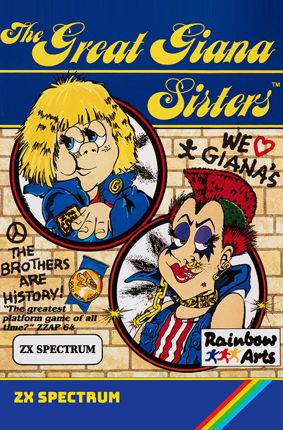

LOAD "Giana Sisters 48K Single Load"
All levels and enemy's load in one go, contains 2 player mode, but has jerkier movement, less animation frames and some stages have less enemies. This seems to line up with what was presented in the magazine reviews back in the day.
LOAD "Giana Sisters 48K Multi Load"
Single player only. This version has smoother scrolling and player / enemy movement at the cost of having to load each level by tape separately.
LOAD "Giana Sisters 128K"
Single load. This has the scrolling title screen, full AY soundtrack, sound effects, 2 player mode, animated lifts, falling block rocks, more enemies and extra animation frames.
LOAD "Giana Sisters Plus 3"
Everything in the 128k version plus a few more enemies, smoother title scrolling and fast loading.